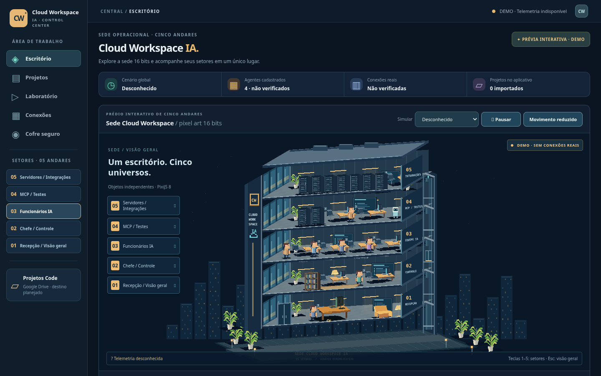
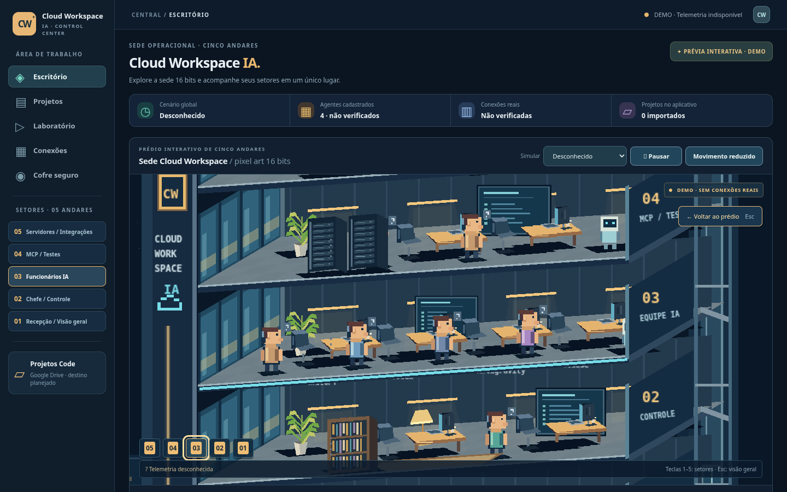
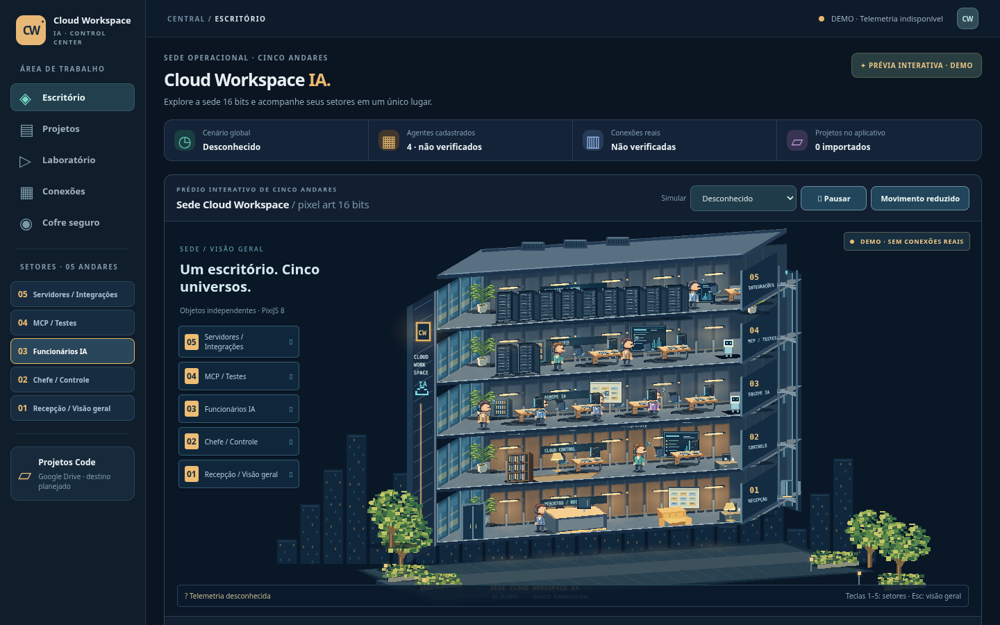
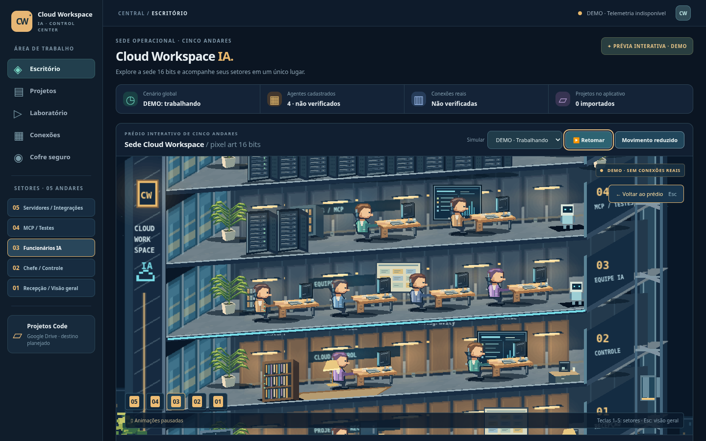

Referência aprovada — conceito estático

Antes — aplicação real, primeira rodada


Agora — aplicação real, rodada 2


A primeira coluna é somente referência artística. As demais são capturas reais do Chromium: versão anterior preservada do commit 616f406 e implementação atual com objetos independentes PixiJS 8. Nenhuma imagem do conceito é textura da aplicação. Clique para ver cada arquivo no tamanho original.




Evolução observável: proporções do prédio, interiores, painéis/armários, rostos/roupas, mesas/cadeiras/teclados/monitores independentes, árvores/cercas vivas, luzes pré-renderizadas e sombras. Ainda diferem: detalhes artesanais, expressividade e sombreamento orgânico do conceito. Capturas web Linux não validam instalador nem desempenho Windows.